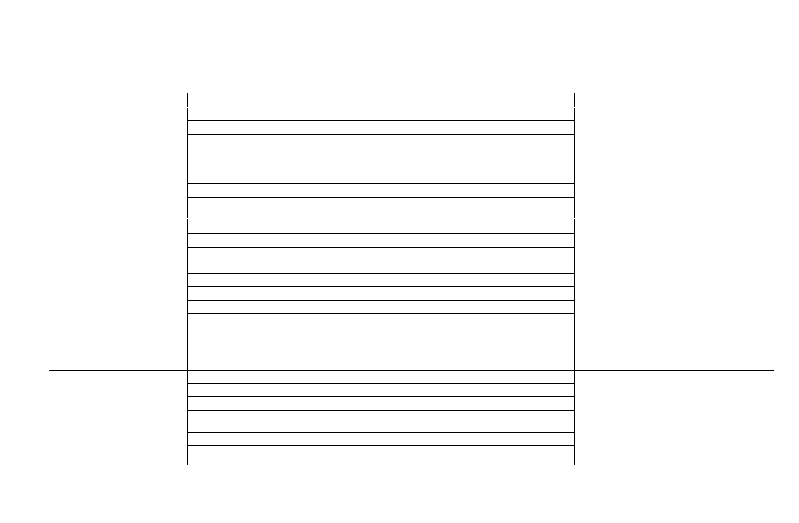

PENGUMUMAN
PELAKSANAAN UJI KESEHATAN (UKES) DAN WAWANCARA
SELEKSI PENERIMAAN MAHASISWA BARU (SPMB) MANDIRI
POLTEKKES KEMENKES BENGKULU
TAHUN AKADEMIK 2025/2026
Peserta yang dinyatakan LULUS pada Hasil Seleksi CBT SPMB Mandiri Poltekkes
Kemenkes Bengkulu yang diumumkan pada tanggal 20 Juni 2025 melalui link
berikut:
1. Uji Kesehatan dan Wawancara (Wajib didampingi Orang Tua Kecuali
Mahasiswa RPL) dilaksanakan pada tanggal 23-25 Juni 2025 di Klinik Hygea
Poltekkes Kemenkes Bengkulu Jl. Indragiri No. 03 Padang Harapan Bengkulu
(kehadiran peserta sesuai Jadwal yang telah ditentukan).
2. Membawa kelengkapan sebagai berikut ;
a. Bukti Kelulusan Seleksi CBT SPMB Mandiri
b. Biaya uji kesehatan sebesar Rp. 150.000,- (Seratus Lima Puluh Ribu
Rupiah) dapat disetor ke Teller atau ditransfer melalui Bank Syariah
Indonesia (BSI) dengan No Rekening 7632153001 atas nama RPL 016 BLU
POLTEKKES UNTUK OPS .
c. Bagi peserta yang akan melakukan pembayaran biaya uji kesehatan
secara tunai, dapat difasilitasi oleh Teller Bank Syariah Indonesi (BSI)
pada lokasi Uji Kesehatan (Klinik Hygea Poltekkes Kemenkes Bengkulu).
d. Membawa pas foto ukuran 3x4 (1 Lembar)
3. Peserta yang mengikuti Uji Kesehatan diwajibkan mengenakan pakaian sopan
dan rapi (baju atasan kemeja kancing depan dan bawahan rok atau celana bahan)
dan menggunakan sepatu tertutup.
4. Apabila sampai dengan tanggal 25 Juni 2025 calon mahasiswa tidak mengikuti
Uji Kesehatan dan Wawancara maka peserta dinyatakan GUGUR.

JADWAL PELAKSANAAN UJI KESEHATAN DAN WAWANCARA SELEKSI PENERIMAAN MAHASISWA BARU (SPMB) MANDIRI
POLITEKNIK KESEHATAN KEMENTERIAN KESEHATAN BENGKULU
TAHUN AKADEMIK 2025/2026
NO HARI/TANGGAL
PROGRAM STUDI
WAKTU DAN LOKASI
1 SENIN/23 JUNI 2025
1. Program Studi Keperawatan Bengkulu Program Diploma Tiga
2. Program Studi Keperawatan Curup Program Diploma Tiga
UJI KESEHATAN
3. Program Studi Keperawatan dan Pendidikan Profesi Ners Program Sarjana Terapan
08.00 - 12.00 WIB
(Kelas Reguler)
KLINIK HYGEA
4. Program Studi Keperawatan dan Pendidikan Profesi Ners Program Sarjana Terapan
(Kelas Internasional)
WAWANCARA
5. Program Studi Gizi dan Dietetika Sarjana Terapan
13.00 – 15.00 WIB
6. Program Studi Gizi Program Diploma Tiga
JURUSAN MASING-MASING
1. Program Studi Kebidanan dan Pendidikan Profesi Bidan Program Sarjana Terapan
2 SELASA/24 JUNI 2025
2. Program Studi Kebidanan Bengkulu Program Diploma Tiga
UJI KESEHATAN
3. Program Studi Kebidanan Curup Program Diploma Tiga
08.00 - 12.00 WIB
4. Program Studi Teknologi Laboratorium Medis Program Diploma Tiga
KLINIK HYGEA
5. Program Studi Farmasi Program Diploma Tiga
6. Program Studi Sanitasi Program Diploma Tiga
7. Program Studi Promosi Kesehatan Program Sarjana Terapan
WAWANCARA
8. Program Studi Keperawatan dan Pendidikan Profesi Ners Program Sarjana Terapan
13.00 – 15.00 WIB
(RPL)
JURUSAN MASING-MASING
9. Program Studi Profesi Ners Program Profesi (Ganjil)
10. Program Studi Profesi Ners Program Profesi (Genap)
3 RABU/25 JUNI 2025
1. RPL Gizi dan Dietetika Sarjana Terapan
UJI KESEHATAN
2. Program Studi Kebidanan Program Sarjana Terapan (RPL) Bengkulu
08.00 - 12.00 WIB
3. Program Studi Profesi Bidan Program Bidan Kelas Bengkulu
KLINIK HYGEA
4. Program Studi Profesi Bidan Program Bidan Kelas Bengkulu (GENAP Khusus Kelas
Pegawai)
5. RPL Sarjana Terapan Kebidanan (Khusus TPMB)
WAWANCARA
6. RPL Profesi Bidan (Khusus TPMB)
13.00 – 15.00 WIB
JURUSAN MASING-MASING